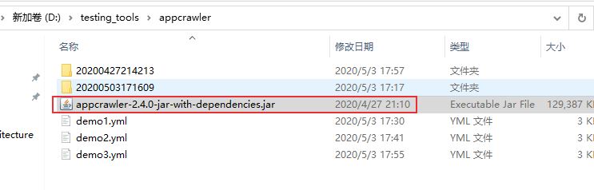
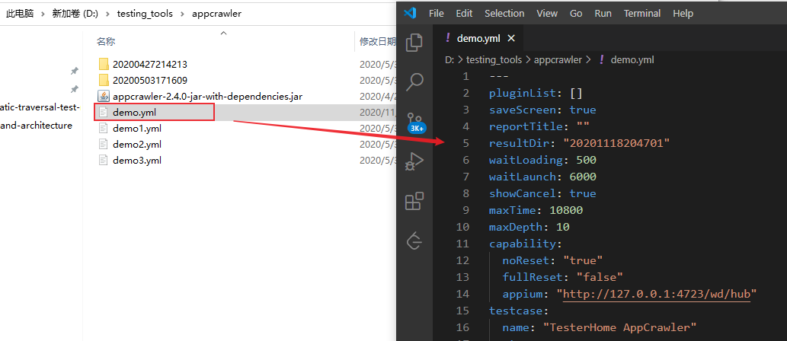
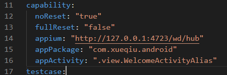
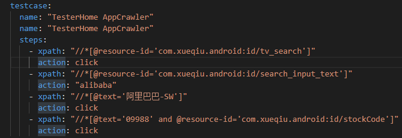
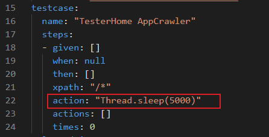
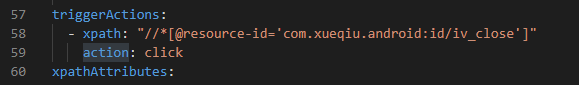
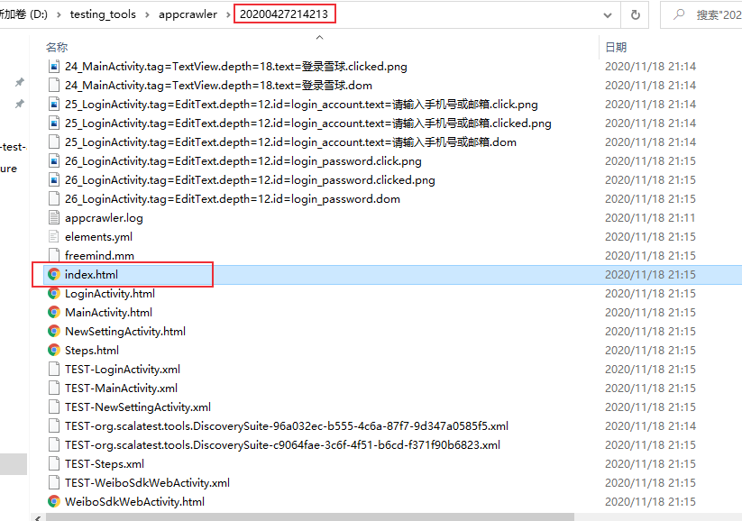
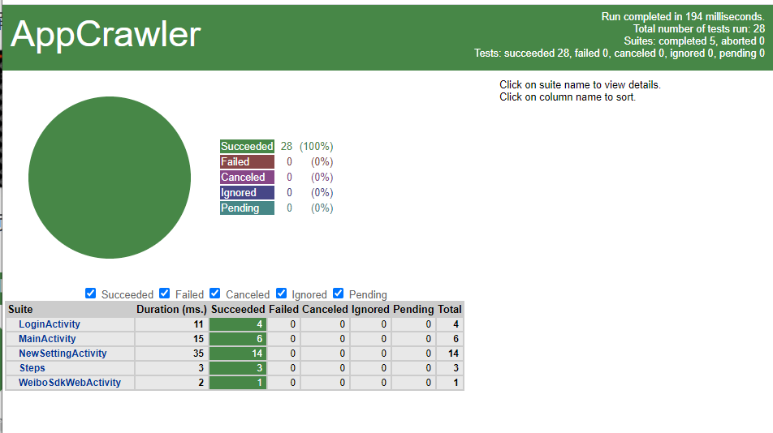

AppCrawler 是由 seveniruby开源的一个自动遍历测试工具，谷歌有一个叫App Crawler 的遍历工具。AppCrawler具有很大的灵活性，可以自由控制测试页面，控件类型，测试深度等，且支持Android和IOS应用测试。
AppCrawler开源地址：https://github.com/seveniruby/AppCrawler
appcrawler基于appium开发，底层引擎还引用了 adb、 macaca、 selenium
AppCrawler安装
AppCrawler工具以jar包方式发布，下载地址：https://pan.baidu.com/s/1dE0JDCH
appcrawler 2.4.0
- java8
- appium 1.8.x

AppCrawler运行
- 启动 appium server
- 启动模拟器或者连接真机
- 开始自动遍历
- appcrawler —capability
- “appPackage=com.xueqiu.android,appActivity=.view.WelcomeActivity Alias”
使用AppCrawler前需要启动appium server，然后启动模拟器或者连接真机。运行 java -jar appcrawler.jar 查看帮助。
1 | D:\testing_tools\appcrawler>java -jar appcrawler-2.4.0-jar-with-dependencies.jar |
生成样板配置示例
运行 java -jar appcrawler.jar --demo 会在当前目录下生成一个demo.yml文件。
通过编辑demo.yml文件实现app自动遍历的灵活定制。
1 | D:\testing_tools\appcrawler>java -jar appcrawler-2.4.0-jar-with-dependencies.jar --demo |

执行参数与配置文件
- capability设置：与 appium完全一致 
1
2
3
4
5
6
7appPackage: "com. xueqiu.android"
appActivity: ".view.WelcomeActivityAlias"
app:
appium: "http: //127.0.0.1:4723/wd/hub"
noReset: true
automationName: uiautomator2
dontStopAppOnReset: true - testcase：用于启动app后的基础测试用例
- selectedList：设定遍历范围
- triggerActions：特定条件触发执行动作
- 执行参数比配置文件优先级别高
1
java -jar <appcrawler.jar路径> -c example.yml --capability appPackage=com.xueqiu.android,appActivity=.view.WelcomeActivityAlias -o /tmp/xueqiu/
testcase
testcase的完整形态
- given：所有的先决条件
- when：先决条件成立后的行为
- then：断言集合
testcase的简写形态
- xpath：对应when里的 xpath
- action：对应when的 action

action
- back 后退
- backApp 回退到当前的app默认等价于back行为 可定制
- monkey 随机事件
- xxx()执行代码
- Thread.sleep(3000)
- driver.swipe(0.9, 0.5,0.1,0.5)
- click
- longTap

自动遍历定制
- selectedList：需要被遍历的元素范围
- firstList：优先被点击
- lastList：最后被点击
- tagLimitMax：同祖先(同类型)的元素最多点击多少次
- backButton：当所有元素都被点击后默认后退控件定位
- blackList：黑名单
- maxDepth：遍历的最大深度
触发器
triggerActions:
动作触发特定次数
通常用于处理弹框：关闭弹框
- xpath：指定具体按钮
- action：动作
- times：规则的使用次数

- xpath：指定具体按钮
自动遍历测试过程
信息的获取:
- 把当前app的界面dump为xml结构
获取待遍历元素
- 遍历范围 selectedList
- 过滤黑名单 小控件 不可见控件 blackList
- 重排控件顺序 firstList lastList
- 跳过已点击+跳过限制点击的控件tagLimit
- 根据匹配的规则执行 action
循环上面的步骤
网页报告
1 | java -jar appcrawler-2.4.0-jar-with-dependencies.jar -c demo1.yml |
自动遍历执行完成后，当前目录会生成测试报告index.html

打开index.html文件

本文标题:App自动化测试 | AppCrawler自动遍历测试
文章作者:hiyo
文章链接:https://hiyongz.github.io/posts/appium-automatic-traversal-test-appcrawler/
许可协议:本博客文章除特别声明外，均采用CC BY-NC-ND 4.0 许可协议。转载请保留原文链接及作者。